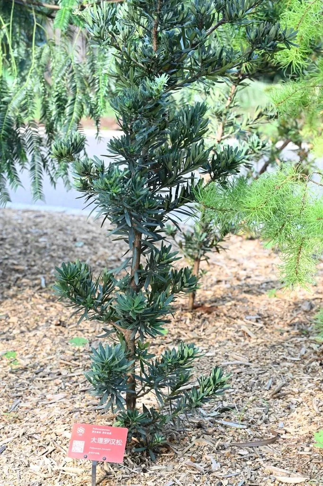

蕨类与裸子植物 · 植物界
大理罗汉松 Podocarpus forrestii

大理罗汉松是中国云南特有的珍稀罗汉松，叶细密、树形古雅，野生植株稀少，被列为国家二级重点保护野生植物。
- 分类
- 门裸子植物门纲松纲目罗汉松目科罗汉松科属罗汉松属
- 栖息环境
- 海拔约 2000 m 的山坡与灌丛，喜温凉湿润、光照充足
- 地理分布
- 中国云南大理、洱源等地，中国特有种
- 保护级别
- IUCN 暂无评估；中国国家二级重点保护野生植物
物种志
大理罗汉松是罗汉松科常绿灌木或小乔木，高 1–5 m，树皮灰褐色。叶密集、条状披针形，厚革质，长 2–5 cm，表面深绿色，背面中脉隆起。雌雄异株，雄球花穗状，雌球花单生叶腋。种子卵圆形，成熟时紫黑色，下托肥厚肉质种托，种托红色或紫红色。
大理罗汉松是中国特有种，仅分布于云南大理、洱源等地的山地，多生于海拔 2000 m 左右的山坡与灌丛中，喜温凉湿润、光照充足的环境。它生长缓慢、树形古雅，枝叶耐修剪，是制作盆景的优良材料；野生植株稀少，分布区狭窄。由于人为采挖和生境破坏，大理罗汉松被列为中国国家二级重点保护野生植物。它既是珍稀的植物资源，也是云南地方特色的园艺树种，需保护与合理利用。
形态与习性
- 株高1–5 m
- 叶条状披针形，厚革质密集
- 种子紫黑色，下托红色肉质种托
- 用途盆景与园林材料
- 保护国家二级重点保护野生植物
趣味知识
- 大理罗汉松是中国云南特有种，野生植株非常稀少。
- 它的枝叶耐修剪，是制作盆景的好材料。
- 因人为采挖和生境破坏，大理罗汉松被列为国家二级保护植物。